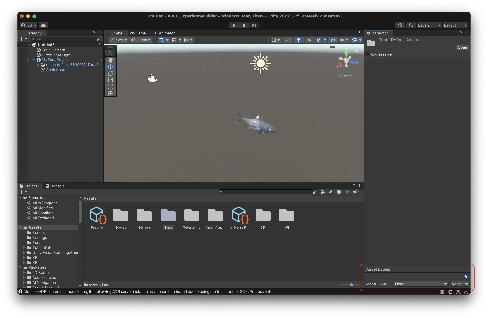
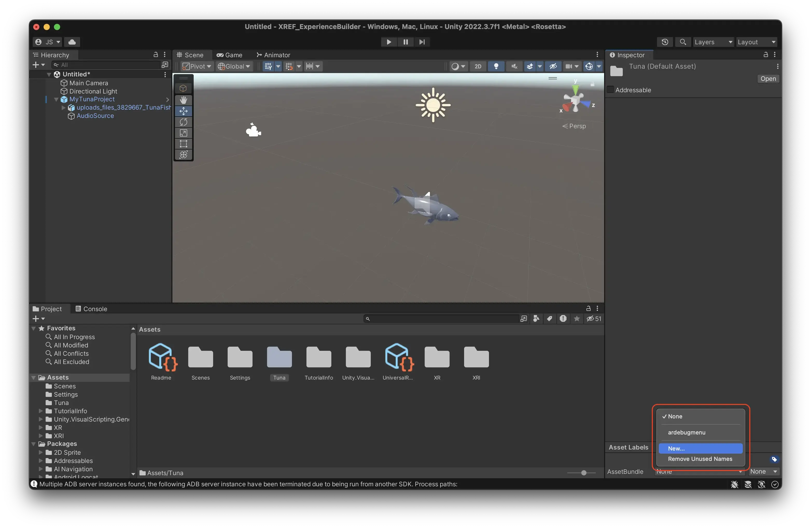

Prepare Your Experience
To upload your experience to Meadow you need to do a few things in Unity:
- Add all your GameObjects as children to one root GameObject.
- Add an Experience component to the root GameObject.
- Turn the root GameObject into a prefab in your project folder.
- Add the folder to an asset bundle.
Here’s a detailed breakdown:
Add your experience as children to an empty GameObject
- In Unity, create a new empty object in your Hierarchy. This is the root object of your experience, that will contain all the other objects.
Important: Make sure that the root object is at position X = 0, Y = 0, Z = 0. Otherwise your experience will be placed in the wrong location in Meadow.

- Select all the objects that you have created for your experience.

- Drag them on top of the new empty object. This turns them into children to that object.

Important: Make sure to not include any cameras in your prefab. The camera is automatically created by Meadow when your experience is opened.
In programming, ‘child’ means an object that is below another object in a hierarchy. Conversely, ‘parent’ is an object that is above another in the hierarchy. And, ‘sibling’ is an object that is on the same level in the hierarchy. A ‘root’ object is the object that is at the top of a hierarchy, that has no further parents.
In the example above you see that both the tuna 3D model and the Audio Source are children to the newly created GameObject named MyExperience.
Add the Experience component to your root object
Experience.cs is a script that tells the Meadow platform that this is an experience that should be displayed in the app.
- Select the empty object you just created.
- Press “Add Component”, search for Experience, and add it. The component is located in the namespace
XREF.

Set your experience settings
The Experience component includes a number of settings which tells the Meadow app how your experience should be presented in the app. For a full list of settings, see the Experience component documentation.

Here are the most important settings:
- Facing Direction:
- User: Experience will open facing the user (non-geospatial only.)
- North: Experience will face north (geospatial only.)
Placement Distance: Distance from the user at which the experience will be placed (non-geospatial only.)
Reposition Type: Determines how the experience should be repositioned when positioning improves. (applies to geospatial or VerticalPositioning.Floor only.)
- Vertical Positioning:
- Floor: Experience is placed on the floor.
- Altitude: Experience is placed based on GPS altitude (often inaccurate, use with caution.)
Add your experience to the project folder
Now you need to add the experience you have created to your folder in the Project Window. When you do this, you create what is called a prefab. A prefab is a type of object that can be reused in different scenes, and also built as an asset bundle. Unity shows you that it is a prefab by changing the icon in the Hierarchy to a blue cube.
- Select the root object of your experience (the one with the Content component.)
- Drag it into the empty area of your folder in the Project Window.

- You should now see a blue cube in your folder. This is a prefab of your experience and is what will be played in Meadow.
Important: Changes to the prefab in your scene is not automatically applied to the prefab in your project folder. You need to manually apply any changes by selecting the prefab in the scene, finding the little toggle called “Overrides†in the inspector, and then press “Apply all”. This is so that you can have different settings for your prefab in different scenes, but it’s not really useful for our purposes. If you have changed things in your experience but the changes are not showing in Meadow, then forgetting to apply overrides is most likely the reason.
To apply all overrides, use the following keyboard shortcuts:
- On macOS: Press Cmd + Alt + A.
- On Windows: Press Ctrl + Alt + A.

Add your files to an asset bundle
Now we need to tell Unity that everything in this folder should be built into an asset bundle. Unity’s UX for this is a bit cumbersome, but you only need to do this once.
- Navigate to your Assets folder in the Project Window.

- Select your folder, but do not enter it.
- In the bottom right corner, you see a teeny tiny text saying “Asset Labels.”

- Press this text to see the asset bundle menu. 
- Press the foldout menu that currently says “None”.
- Press new. 
- Give your asset bundle a sensible name so you can easily recognize it later. This tells Unity that every file in this folder should be built into this asset bundle. This is what you will upload to our platform.
Important: Do not use spaces, special characters or capital letters in the name of your asset bundle. This will cause errors when loading it in Meadow. Name it something like “myexperience”, “mrsnail†or “thesquarelevelone”.
Upload your experience using Meadow Studio
Your experience is now ready to upload to Meadow! Follow the instruction here.